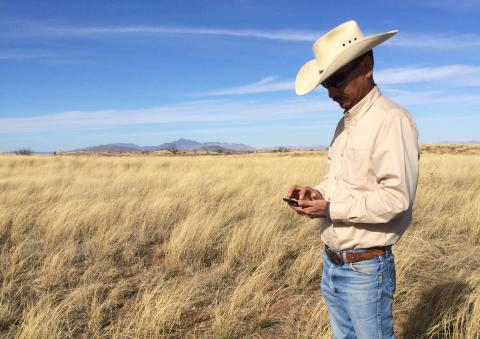
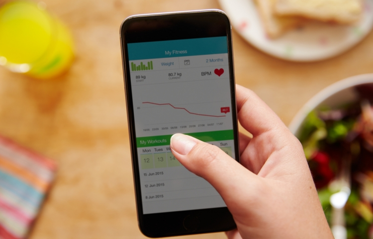
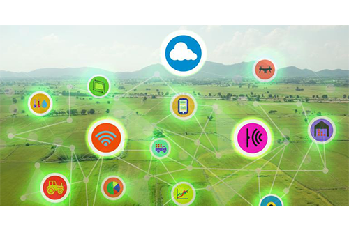
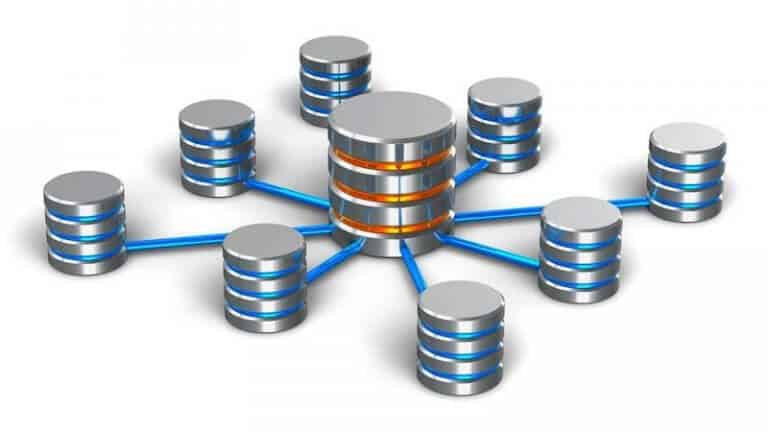

Assignment 1: Melody's News Pick & Response
- Open Data Revolution to Fight Global Hunger 
- Effectiveness of Patient Generated Health Data in Routine Clinical Care 
- How a Single Source of Truth Database is Helping One Health System Drive Analytics Success
Open data is making positive impact on agriculture and food security. With insightful data, farming is no longer a practice that solely depends on farmers’ experience. Seasoned farmers know when and where to plant and harvest crops, and such information that helps decision-making is now available for public use. Along with agricultural data, global food nutrition data is also made accessible. This enables consumers to make better diet plans as they are better informed of what they actually consume.
Not only does the private sector benefit from open agriculture data, the public sector is also capable of launching better programs to intervene and target agricultural practice. It is exciting to learn that open data can help tackle the problem of global hunger.
With some research, I find out some technologies used to capture farm data. One way is to attach smart sensors to farm equipments that will automatically detect and transmit geolocation data, soil data, and water data, etc. The other way is to utilize On-board Diagnostics (OBD) that enables farm vehicle's self-diagnostic and reporting capability. Some other ways to capture farm data includes phone-based technology such as Interactive Voice Response (IVR) that enables speech recognition and remote sensing technology such as satellite monitoring.
Patient generated health data is a major source of clinical data. However, to capture a stream of raw data from numerous patients simultaneously is a challenge faced by physicians today. This article focuses on the technologies used to capture and supply patient generated health data into a clinical workflow.
For data collection, bluetooth enables glucometers are used to transmit patient data to a connectivity platform. In the next stage, both patients and clinicians use a mobile app for data visualization. Patients can see their own clinical data such as blood pressure and are advised to continuously update the information on their own, whereas clinicians can see a continuously updated dashboard which summarizes patient information and highlights patients that require attention. Later, patients use TapCloud, a health data platform, to communicate their daily symptoms with clinicians.
It seems to me that both active and passive data capture are involved in the process. Active data capture takes the form of digital survey in which patients are asked to report their symptoms. Passive data capture is done by glucometers. In both ways, raw data obtained is already in an electronic format which eases conversion to structured data for storage and analysis.
As people become increasingly aware of the importance of storing data, one common mistake they make is ignoring information aggregation. Data, as various as it is, usually comes from different data sources. The computational cost as well as manual cost of retrieving data from different sources to perform analytics is considerably high. That is why nowadays data scientists are often advised to run codes natively in databases rather than retrieving datasets before running programs.
In this news, Health Quest, a health system, manages to combine two data warehouses to build a single source of database to aggregate data gathered from different sources. As a result, analysts now spend less time filtering datasets and more time qualitatively assessing the information. Health Quest utilizes SQL Server supplemented with QlikView, a Business Intelligence product, and SQL Server Reporting Services(SSRS), a report generating software, to manage their database as well as perform data visualization.
One important takeaway from this article is to streamline the analytic process before building a database. Based on my industrial experience, the inefficiency associated with retrieving information from different datasets often results from the time spent on querying and joining datasets. The manual cost of identifying a column to join large datasets and the computational cost of system operation time are both high.